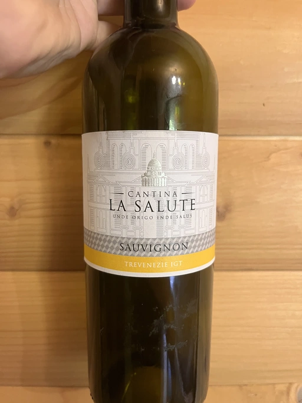

- Type
- White Still, Dry
- Producer
- Cantina la Salute
- Vintage
- NV
- Location
- Italy, IGP Trevenezie
- Grapes
- Sauvignon Blanc
- Alcohol
- 12
- Sugar
- NA
- Price
- 450 UAH
- Cellar
- N/A
Ratings
2022-05-25 - 4.50
Tasted blind. Guessed it’s origin, but didn’t guess grape. Not focused and flat both in nose and in taste. Lots of apples, with apple seeds in the finish.